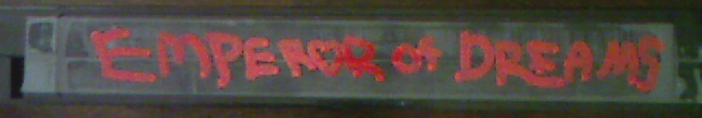
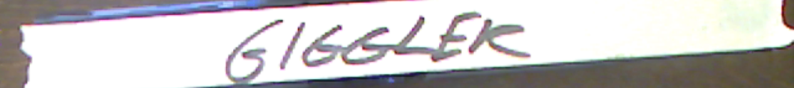

LostTapes.0021
'The Mind Cannot Unsee the Seen.'
Transcendence of Locke - 2004, 3 hours 10 minutes
Banned Documentary film about American scientist Peter Locke who switched loyalty to the Nazis during WWII. Banned Worldwide due to heavy Nazi propaganda. Acquired from private collection

Family Reunion 93' - 1993, 10 minutes
A handheld video recording made by a child filming herself killing her parents. Found by an anonymous donor in the attic of an abandoned house. Looks very real though anything related to a crime like this can't be found anywhere
Equality Of A Nuclear Winter - 1982, 1 hour 35 minutes
Speculative fiction film where the cold war resulted in a worldwide nuclear catastrophe. Focuses on real powerful figures in the US suffering especially during the aftermath

Suffer No Beasts - 1975, 1 hour 3 minutes
Graphic glorified imagery of legitimate recorded war atrocities during Vietnam, strung together with a fictional narrative of an alien invasion. Unreleased due to extreme racism and real depictions of violence

Emperor of Dreams - 1998, 2 hours 1 minute
A step-by-step "fictional" instruction video for how to use hypnosis and drugs to build your own cult. Methods depicted are proven techniques and involve criminal acts

Becoming My End - 1993, 2 hours 17 minutes
Recorded footage of an unnamed artist who slowly poisons himself to death on camera. Filmed himself over a period of 1 month for the purpose of a masterpiece in the "unexplored territory" of mortality

Perfection of Lust - 2020, 1 hour 48 minutes
Documentary of extreme body modification procedures involving traumatic optical mutilations, showing the procedures graphically and fully

God Without Shame - 1963, 2 hours 40 minutes
Unreleased fictional epic centering around a small-town preacher who gains the powers of Jesus after being rescued from a near-death experience by an angel. Banned by religious groups internationally due to depictions of anti-christian rhetoric, and for unrelated public indecency charges against the lead actor

True Royals - 1997, 3 hours 45 minutes
Banned (and thought destroyed) paparazzo footage a European royal family members behind the scenes, including illegal ritualistic acts and drug use. Original creator disappeared mysteriously

Giggler - 2006, 1 hour 43 minutes
Banned horror film in which a dentist subdues his patients using concentrated laughing gas and tortures them while they helplessly laugh. Banned after filming completed when the director was charged with assault and battery by the actors who complained of his "method directing using real physical abuse